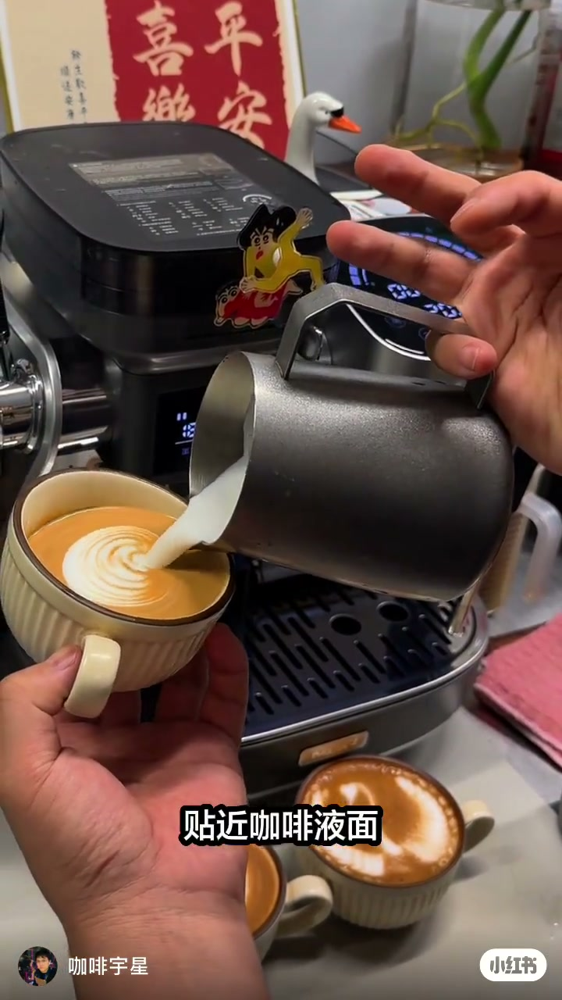
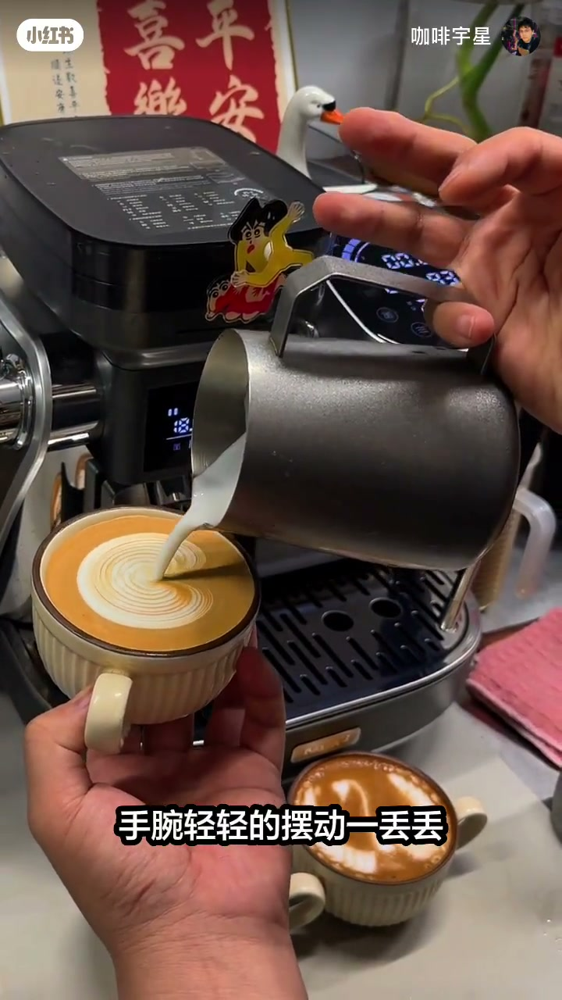

内容要点
咖啡宇星用 12 秒俯拍演示「摆动」到底在干什么：不是疯狂甩腕，而是钢嘴／缸嘴贴近咖啡液面、大流量释放，手腕只轻轻摆动一丢丢，warm（纹路）就能出来。笔记文案用 ❌／✅ 把反例与正例写死。
知识结构
[00:00→00:12]
摆动三件套
缸嘴贴液面 + 大流量释放 + 手腕轻摆一丢丢 → warm 出来；不要疯狂摆动。
总结
拉花摆动的关键不是摆得猛，而是嘴贴近液面后的大流量轻摆；越疯狂越容易没有纹路。
00:00-00:12近液面、大流量、轻摆腕——别疯狂甩
口播把「摆动」拆成动作链：钢嘴儿贴近咖啡液面 → 大流量释放 → 手腕轻轻摆动一丢丢 → warm 就能出来；最后踩刹车「不要那么疯狂的去摆动」。ASR 把钢嘴听成「刚嘴儿」、把 warm 听成「窝囊」，以画面字幕与笔记为准。
00:04 俯拍可见深灰拉花缸嘴几乎贴着米色棱纹杯液面注入，字幕「贴近咖啡液面」；00:07 杯面已起细密摆动纹，字幕「手腕轻轻的摆动一丢丢」。右下角完成心形拉花是结果参照。笔记补充：一个小手指幅度即可，❌越疯狂越没纹路，✅缸嘴贴进液面大流量释放。

[00:04] 俯拍拉花：深灰拉花缸嘴贴近米色棱纹杯内咖啡液面，大流量注入形成白色圆心；字幕「贴近咖啡液面」；背景意式机贴蜡笔小新贴纸
Overhead: dark-gray pitcher tip near coffee in a beige ribbed cup; high flow makes a white center; subtitle “Close to the coffee surface”; Crayon Shin-chan sticker on the machine

[00:07] 同一俯拍角度，缸嘴继续近液面注入，杯面已出现细密摆动纹路；字幕「手腕轻轻的摆动一丢丢」；右下角另有一杯完成心形拉花
Same overhead: tip stays near the surface; fine wiggle lines appear; subtitle “A tiny wrist wiggle”; finished heart latte bottom-right
完整转录（5段）
以下文本由 Whisper medium 模型自动转录，可能存在少量识别误差，已尽可能修正。
摆动啊其实就是刚嘴儿贴近咖啡液面
大流量的释放
手腕轻轻的摆动一丢丢
你的窝囊就能出来
不要那么疯狂的去摆动